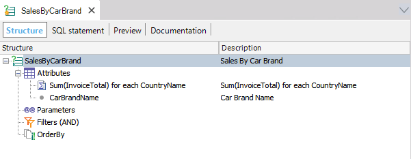
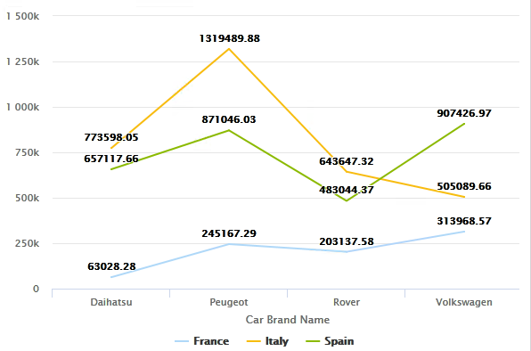
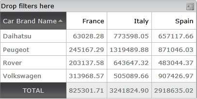
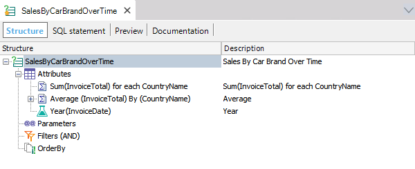
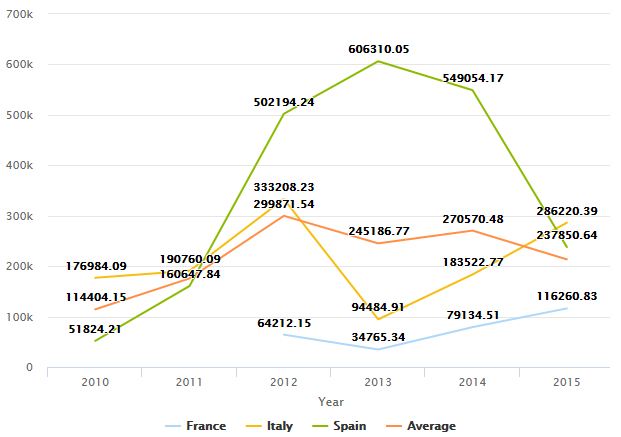

The For each clause in a Query object allows splitting a measure into more than one by using one dimension to perform the separation. In other words, it allows displaying the Query's result separated by the differents measure's values, if you want it is similar to a group by operation. Syntax<Expression1> for each <Expression2> where: <Expresion1> is the measure to split. It can be defined by a simple expression or with an aggregated formula. <Expression2> is the dimension used to separate the measure. It must be defined using a simple expression (no aggregated formulas are allowed). The Query will display one result of the <Expression1> for each <Expression2> value. AvailabilityAs of GeneXus 15 Upgrade 4. Usage exampleThere are many scenarios where this clause can be applied, so let's focus in two of them, a simple case and a little bit complex one. Let's suppose a Car Dealer reality. Simple caseIn this case, we will focus on each Car Brand's total sales. We want to show the differents values separated by country. To do so, we define the following Query structure:  After the Query's execution, the following values are displayed:  Showing the result in a Pivot Table will be as follows:  Notice that this type of syntax is also useful when:
Complex caseIn this case, we want to compare the total sale's average with each Car Brand's total over time and separated by countries. So, the following structure is defined:  The displayed result is:  Try it!Experience this clause in action with the TestWebQueryViewer KB sample. See also |